In this How-To we will take you through the process of creating a script and then from the scripts output generate a complete Graph Template that you can apply to your Cacti system. You should be able to reproduce this process regardless of the script type in question.
Lets start with a simple script that takes a hostname or IP address as input parameter returning a single value.
<path_cacti>/scripts/ping.pl:
#!/usr/bin/perl
# take care for tcp:hostname or TCP:ip@
$host = $ARGV[0];
$host =~ s/tcp:/$1/gis;
# old Linux version use "icmp_seq"
# newer use "icmp_req" instead
open(PROCESS, "ping -c 1 $host | grep 'icmp_[s|r]eq' | grep time |");
$ping = <PROCESS>;
close(PROCESS);
$ping =~ m/(.*time=)(.*) (ms|usec)/;
if ($2 == "") {
print "U"; # avoid cacti errors, but do not fake RRDtool stats
}elsif ($3 eq "usec") {
print $2/1000; # re-calculate in units of "ms"
}else{
print $2;
}
To define this script as a Data Input Method to Cacti go to Data Input Methods and click Add. You should see:
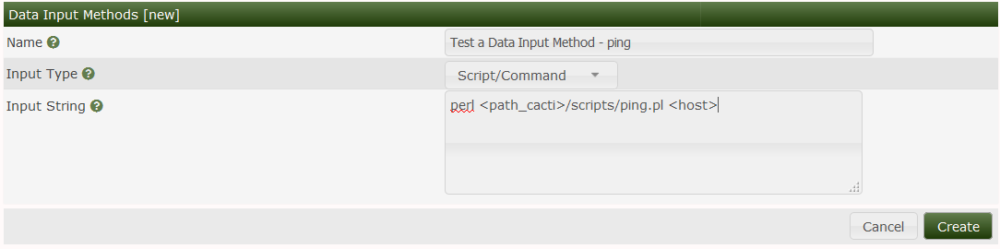
Please fill in Name, select Script/Command as Input Type and provide the command that should be used to retrieve the data. You may use <path_cacti> as a symbolical name for the path_to_your_Cacti_installation. Those commands will be executed from crontab; so pay attention to providing full path to binaries if required (e.g. /usr/bin/perl instead of perl). Enter all Input Parameters in <> brackets. Click create to see:
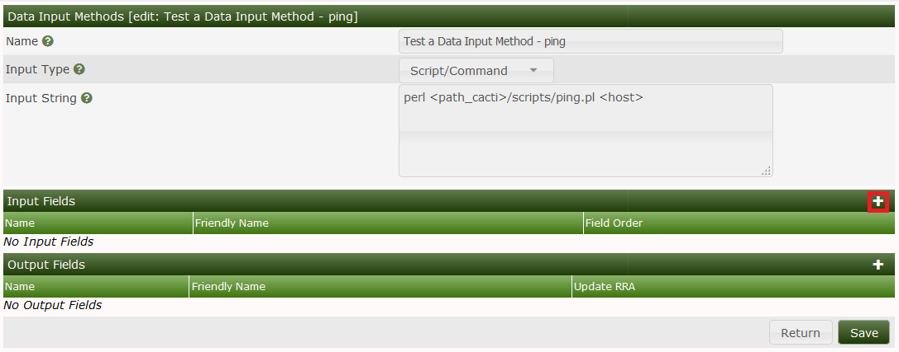
Now lets define the Input Fields. Click Add as given above to see:
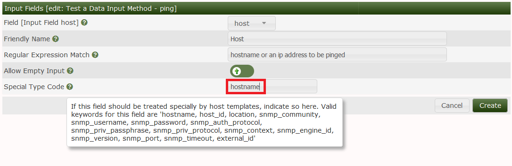
The drop down Field [Input] contains one single value only. This is taken from the Input String <host> above. Fill Friendly Name to serve your needs. The Special Type Code allows you to provide parameters from the current Device to be queried. In this case, the hostname will be taken from the current device. Click create to see:
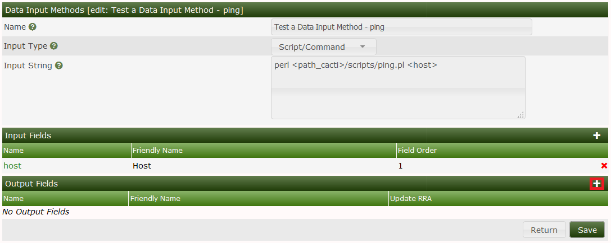
At least, define the Output Fields. Again, click Add as described above:
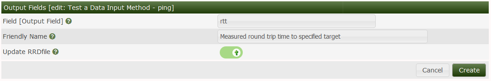
Provide a short Field [Output] name and a more meaningful Friendly Name. As you will want to save those data, select Update RRDfile. Create to see:
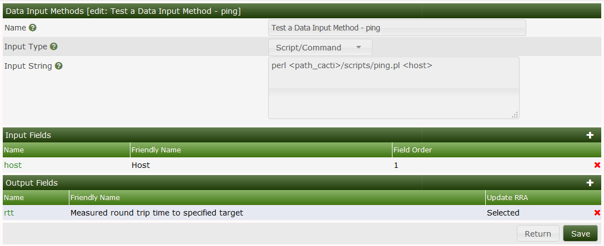
Click Save and you're done.
Now you want to tell Cacti, how to store the data retrieved from this script. Please go to Data Templates and click Add. You should see:
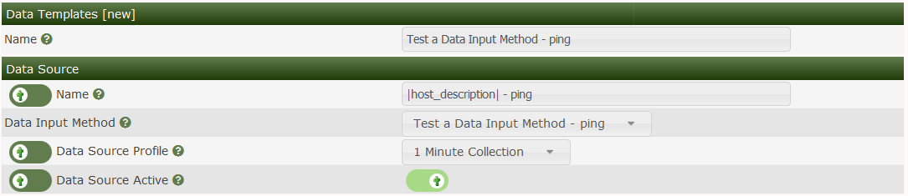
Fill in the Data Templates Name with a reasonable text. This name will be used to find this Template among others. Then fill in the Data Source Name. This is the name given to the host-specific Data Source. The variable |host_description| is taken from the actual Device. This is to distinguish Data Sources for different devices. The Data Input Method is a drop down containing all known scripts and the like. Select the Data Input Method you just created. The Associated RRA's is filled by default. At the moment there's no need to change this. The lower part of the screen looks like:
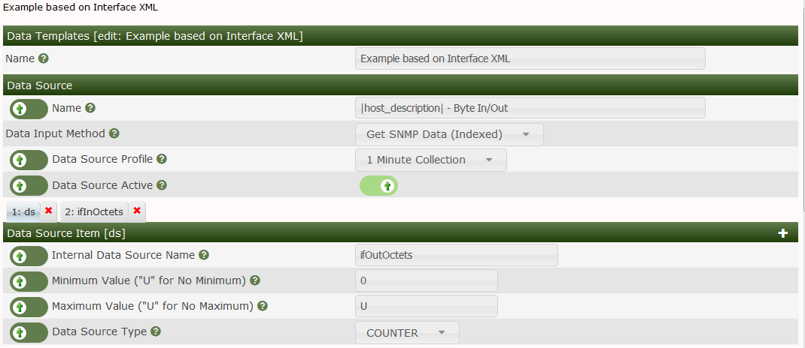
The Internal Data Source Name may be defined at your wish. There's no need to use the same name as the Output Field of the Data Input Method, but it may look nicer. Click create to see:
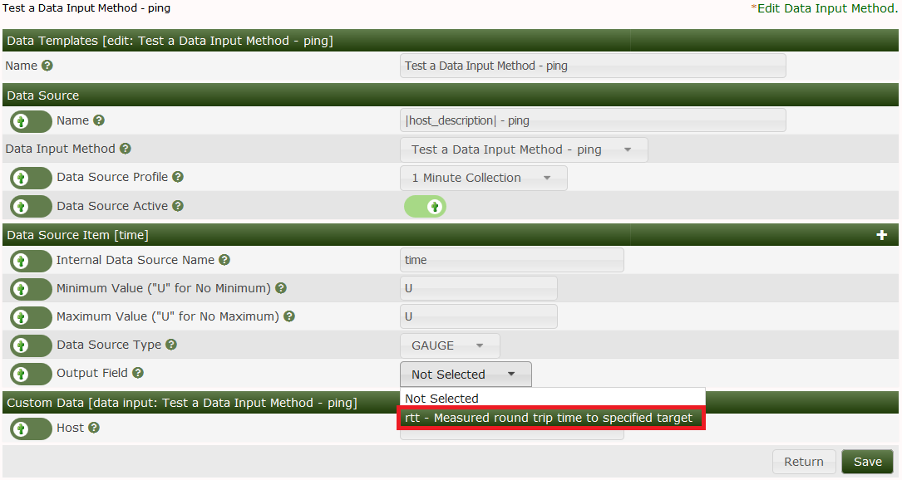
Notice the new drop down Output Field. As there is only one Output Field defined by our Data Input Method, you'll see only this. Here's how to connect the Data Source Name (used in the RRDfile) to the Output Field of the Script. Click Save and you're done.
Now you want to tell Cacti, how to present the data retrieved from this script. Please go to Graph Templates and click Add. You should see:
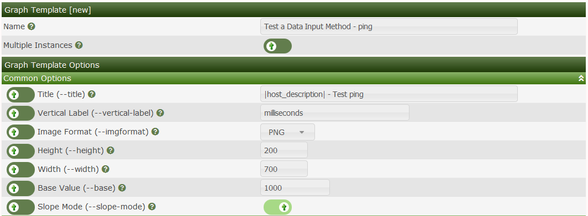
Fill in Name and Title. The variable |host_description| will again be filled from the Device's definition when generating the Graph. Keep the rest as is and Create. See:
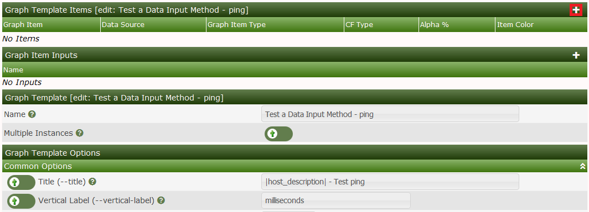
Now click the plus (+) glyph to Add the first item to be shown on the Graphs:
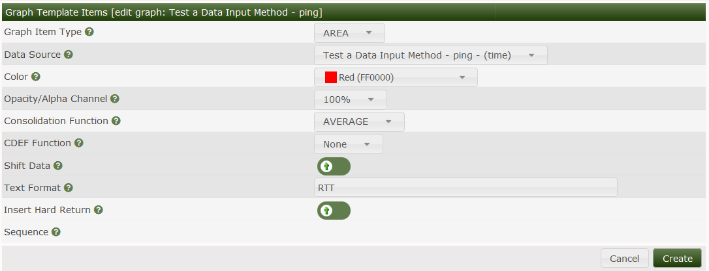
Select the correct Data Source from the drop down, fill in a color of your liking and select AREA as a Graph Item Type. You want to fill in a Text Format that will be shown underneath the Graph as a legend. Again, Create:
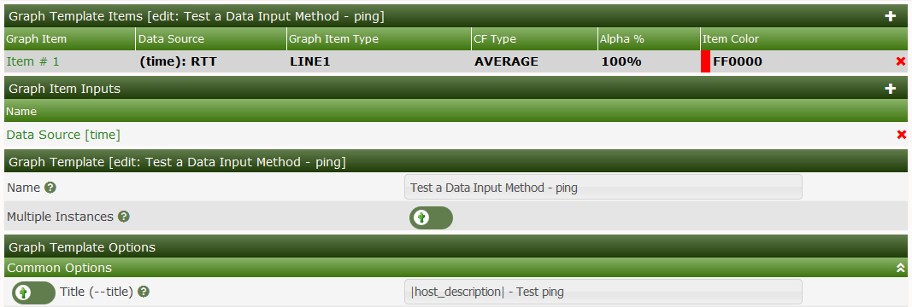
Notice, that not only an entry was made under Graph Template Items, but under Graph Item Inputs as well. Don't bother with that now. Lets fill some more nice legends, see:
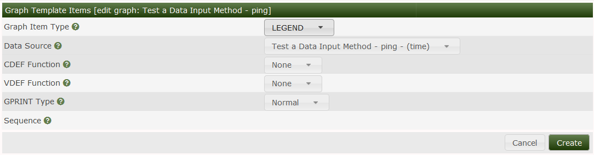
Notice, that the Data Source is filled in automagically. Select LEGEND as Graph Item Type (it is not really a Graph Item Type in RRDtool-speak, but a nice time-saver), and click Create to see:
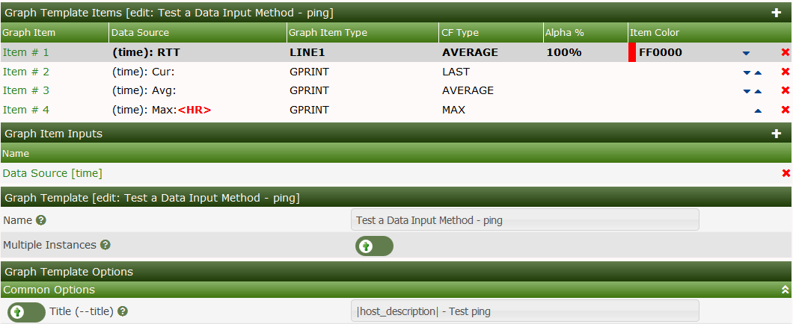
Wow! Three items filled with one action!
Now go to the Devices and select the one of your choice. See the Associated Graph Templates in the middle of this page:
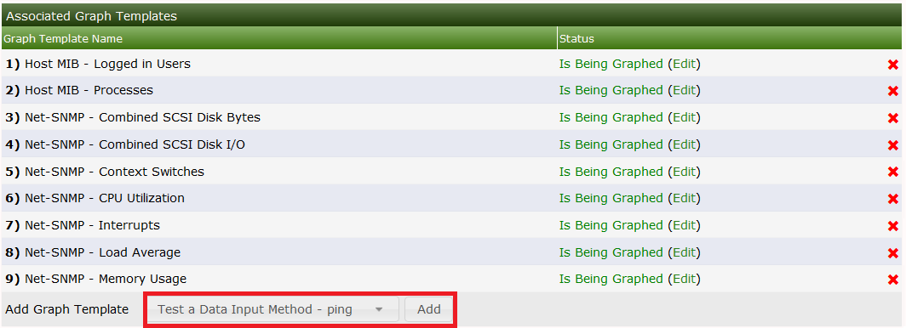
Select your newly created Graph Template from the Add Graph Template drop down. Click the plus (+) glyph to see:
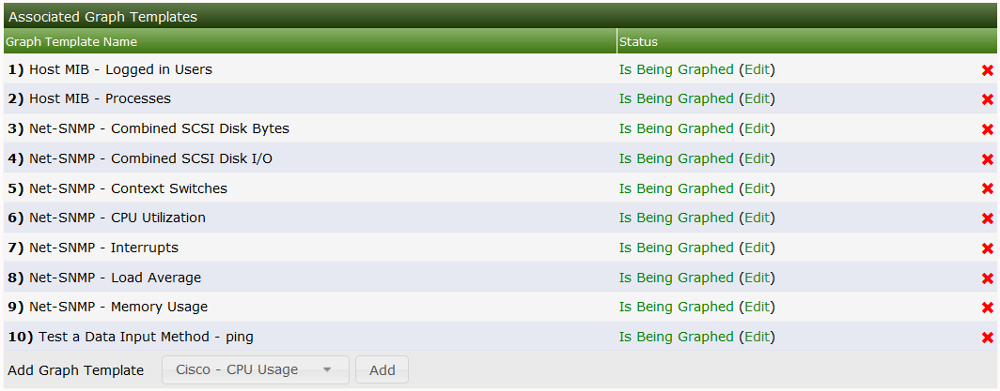
By default, the Graph Template is added and shown as Is Being Graphed. The reason for this is that Cacti now automatically creates Graphs automatically, unless disabled. If the Graph Template shows Not Being Graphed, you can create the Graph by pressing the Create Graphs at the top of the Devices page. Click this link to see:
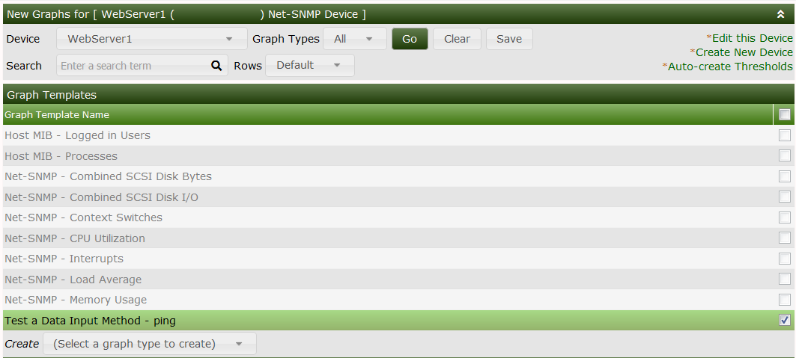
Check the box that belongs to the new template and Create. See the results:
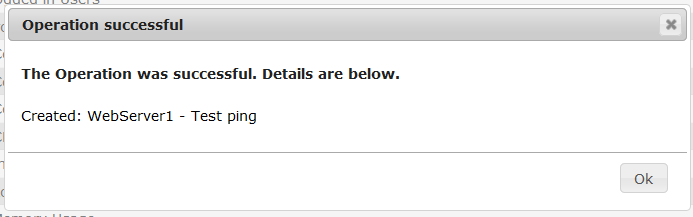
This will automatically
Create the needed Graph Description from the Graph Template. As you may notice from the success message, this Graph takes the hosts name in it: router - Test ping (router is the hosts name of this example).
Create the needed Data Source Description from the Data Template. Again, you will find the Hosts name replaced for |host_description|
Create the needed RRDfile with definitions from the Data Template. The name of this file is derived from the Host and the Data Template in conjunction with an auto-incrementing number.
Create an entry to the poller_item to instruct Cacti to gather data on each polling cycle.
You'll have to wait at least two polling cycles to find data in the Graph. Find your Graph by going to Graph Management, filtering for your host and selecting the appropriate Graph (there are other methods as well). This may look like:
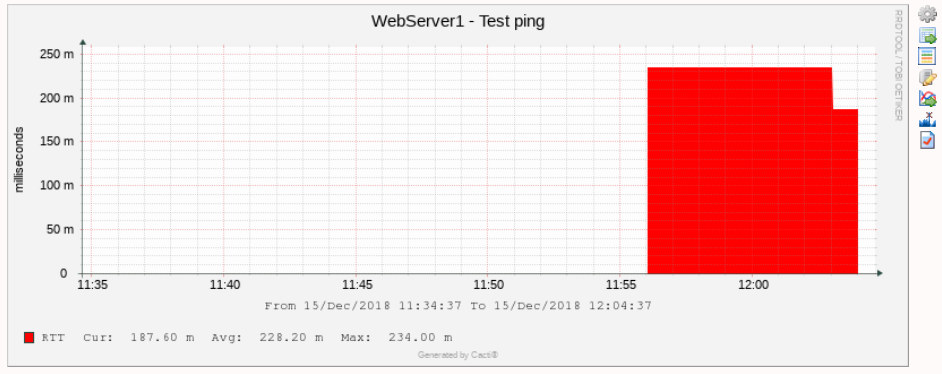
The script below will be implemented in perl. Please note that any supported language is supported using Cacti from direct command execution to scripts written in perl, python, php, bash, etc.
#!/usr/bin/perl -w
# --------------------------------------------------
# ARGV[0] = <hostname> required
# ARGV[1] = <snmp port> required
# ARGV[2] = <community> required
# ARGV[3] = <version> required
# --------------------------------------------------
use Net::SNMP;
# verify input parameters
my $in_hostname = $ARGV[0] if defined $ARGV[0];
my $in_port = $ARGV[1] if defined $ARGV[1];
my $in_community = $ARGV[2] if defined $ARGV[2];
my $in_version = $ARGV[3] if defined $ARGV[3];
# usage notes
if (
( ! defined $in_hostname ) ||
( ! defined $in_port ) ||
( ! defined $in_community ) ||
( ! defined $in_version )
) {
print "usage:\n\n
$0 <host> <port> <community> <version>\n\n";
exit;
}
# list all OIDs to be queried
my $udpInDatagrams = ".1.3.6.1.2.1.7.1.0";
my $udpOutDatagrams = ".1.3.6.1.2.1.7.4.0";
# get information via SNMP
# create session object
my ($session, $error) = Net::SNMP->session(
-hostname => $in_hostname,
-port => $in_port,
-version => $in_version,
-community => $in_community,
# add more parameters if there's a need for them:
# [-localaddr => $localaddr,]
# [-localport => $localport,]
# [-nonblocking => $boolean,]
# [-domain => $domain,]
# [-timeout => $seconds,]
# [-retries => $count,]
# [-maxmsgsize => $octets,]
# [-translate => $translate,]
# [-debug => $bitmask,]
# [-username => $username,] # v3
# [-authkey => $authkey,] # v3
# [-authpassword => $authpasswd,] # v3
# [-authprotocol => $authproto,] # v3
# [-privkey => $privkey,] # v3
# [-privpassword => $privpasswd,] # v3
# [-privprotocol => $privproto,] # v3
);
# on error: exit
if (!defined($session)) {
printf("ERROR: %s.\n", $error);
exit 1;
}
# perform get requests for all wanted OIDs
my $result = $session->get_request(
-varbindlist => [$udpInDatagrams, $udpOutDatagrams]
);
# on error: exit
if (!defined($result)) {
printf("ERROR: %s.\n", $session->error);
$session->close;
exit 1;
}
# print results
printf("udpInDatagrams:%s udpOutDatagrams:%s", # <<< cacti requires this format!
$result->{$udpInDatagrams},
$result->{$udpOutDatagrams},
);
$session->close;
It should produce following output, when executed from command line:
[prompt]> perl udp_packets.pl localhost 161 public 1
udpInDatagrams:10121 udpOutDatagrams:11102
Where “public” would be replaced by your community string. Those input parameters again are controlled by the Input Fields in Cacti and the output from the script will be mapped to Output Fields. If you wish to return multiple output values, they must be space delimited name value pairs in the form of nameA:valueA nameB:valueB ...
To define this script as a Data Input Method to Cacti go to Data Input Methods and click the plus (+) glyph.
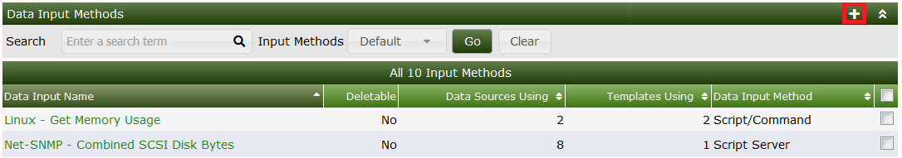
You should see:
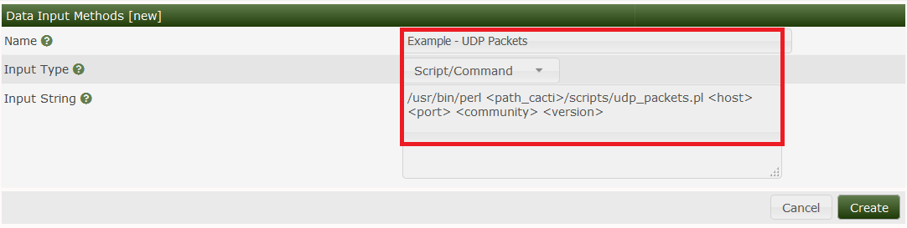
Enter the name of the new Data Input Method, select Script/Command and type in the command to call the script. Please use the full path to the command interpreter. Instead of entering the specific parameters, type <symbolic variable name> for each parameter the script needs. Save:
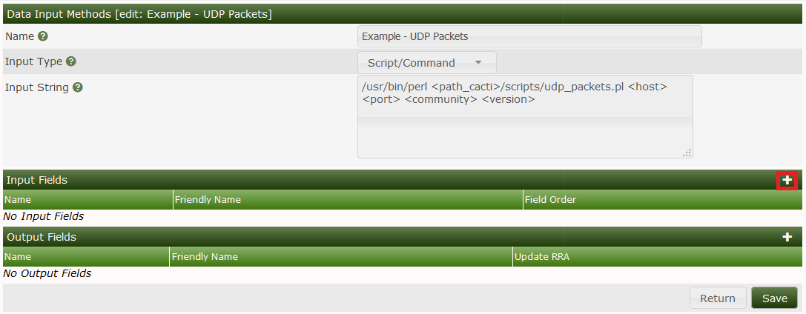
Now add each of the input parameters in the Input Fields section, one after the other. All of them are listed in sequence, starting with <host>:
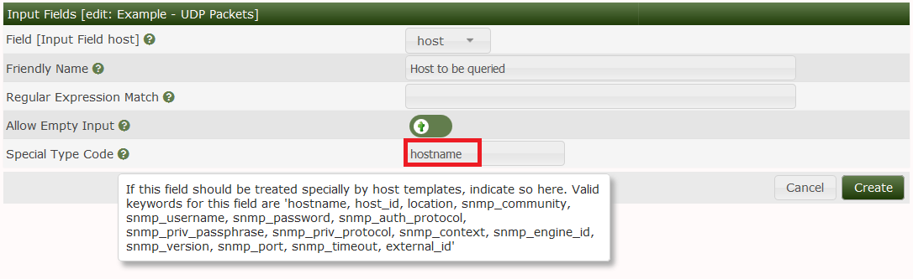
<port>
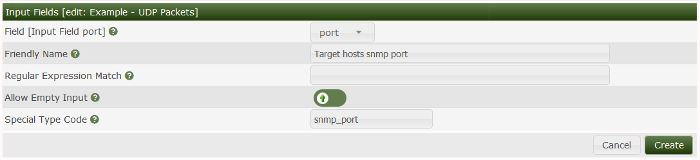
<community>
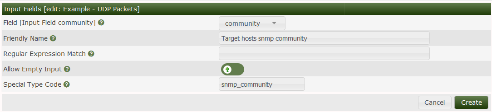
<version>
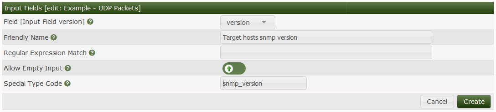
We've used some of Cacti builtin parameters. When applied to a host, those variables will be replaced by the hosts actual settings. Then, this command will be stored in the poller_command table. Now Save your work to see
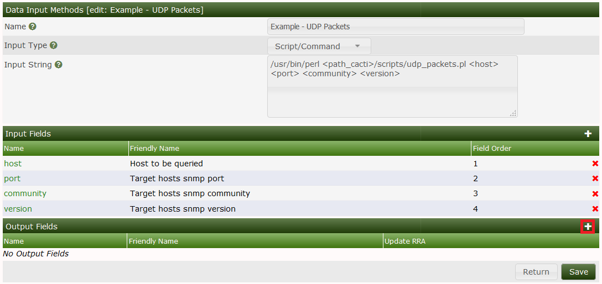
After having entered all Input Fields, let's now turn to the Output Fields, respectively. Add the first one, udpInDatagrams:
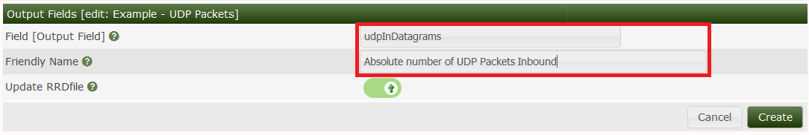
Now udpOutDatagrams:
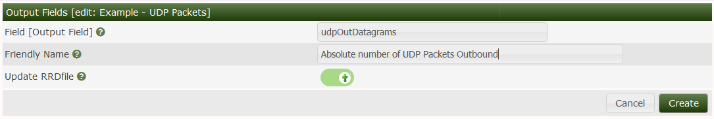
Be careful to avoid typos. The strings entered here must exactly match those spitted out by the script. Double check Output Fields! Now, results should be like
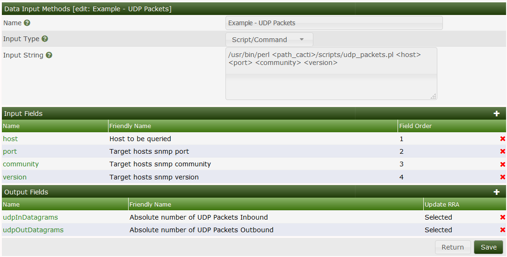
Finally Save and be proud!
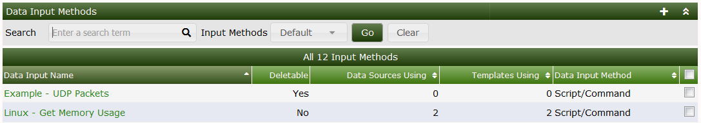
The previous step explained how to call the script that retrieves the data. Now it's time to tell Cacti, how to store them in RRDfiles. You will need a single Data Template only, even if two different output fields will be stored. RRD files are able to store more than one output fields; RRDtool's name for those is Data Source. So we will create
One single Data Template representing one RRDfile
Two output fields/data sources
The first step is quite the same as Create the Data Template for a simple Data Input Method. For sure, we provide a different name, Example - UDP Packets. Now, let's enter the first Data Source. Again, its like above. But we now provide the name of udpInPackets, enter a Maximum value of 100,000 and select the Data Source Type of COUNTER.
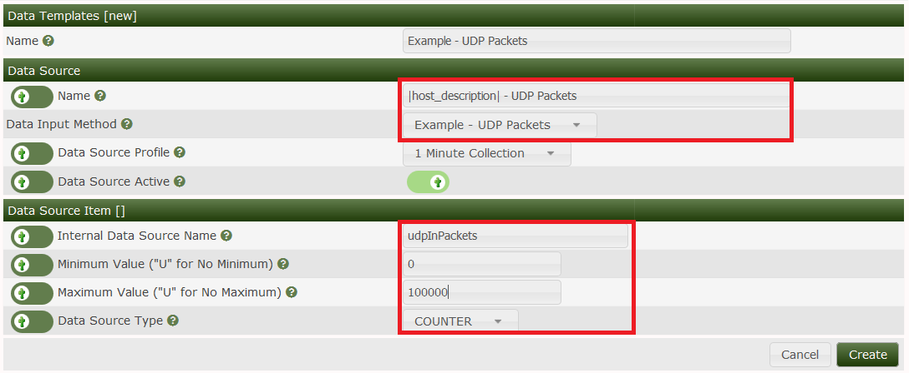
Then save and find with the exception that the Output Field will be set to None Selected. Therefore, before adding the second Data Source Item, make sure you select the Output Field of udpInDatagrams and press the Save button to create the association.
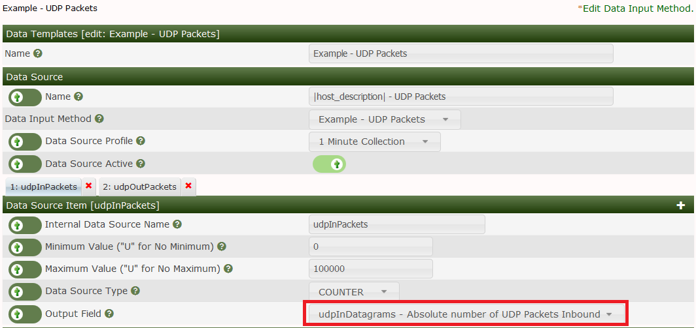
Then, add the second Data Source by pressing the plus (+) glyph and providing data for udpOutPackets. Pay attention to select the correct Output Field defined by the Data Input Method as we did with the udpInDatagrams.
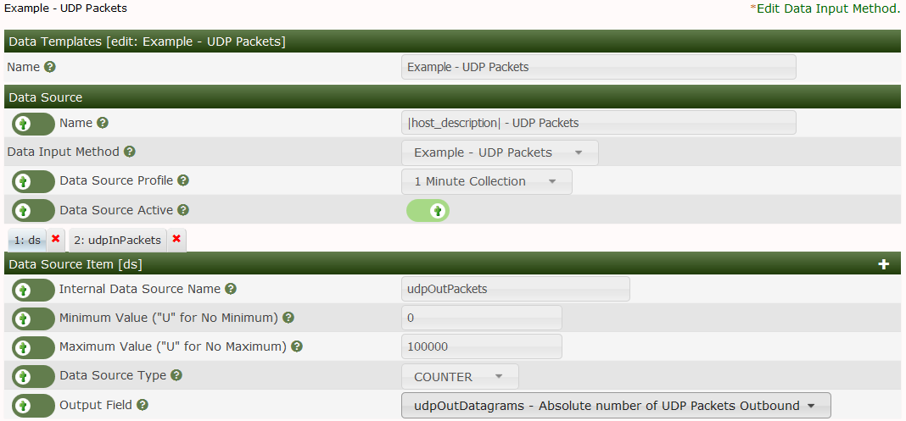
To deactivate maximum checking, enter 'U', else the desired number. Do not forget to select the correct Data Source Type and the Output Field as before.
Most of this task of creating a Graph Template has already been covered in our example. You will basically create a new Graph Template, provide a Line or an Area Fill followed by a Legend for both the udpInDatagrams and udpOutDatagrams. The result of those actions will be the image below:
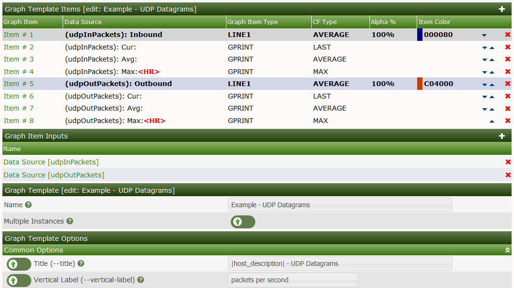
After you have created your Graph Template you can proceed to Add the Graph Template to your Device, and either allow the automation to create the Graph for you, or to manually add it from the New Graphs menu pick.
Copyright (c) 2004-2024 The Cacti Group